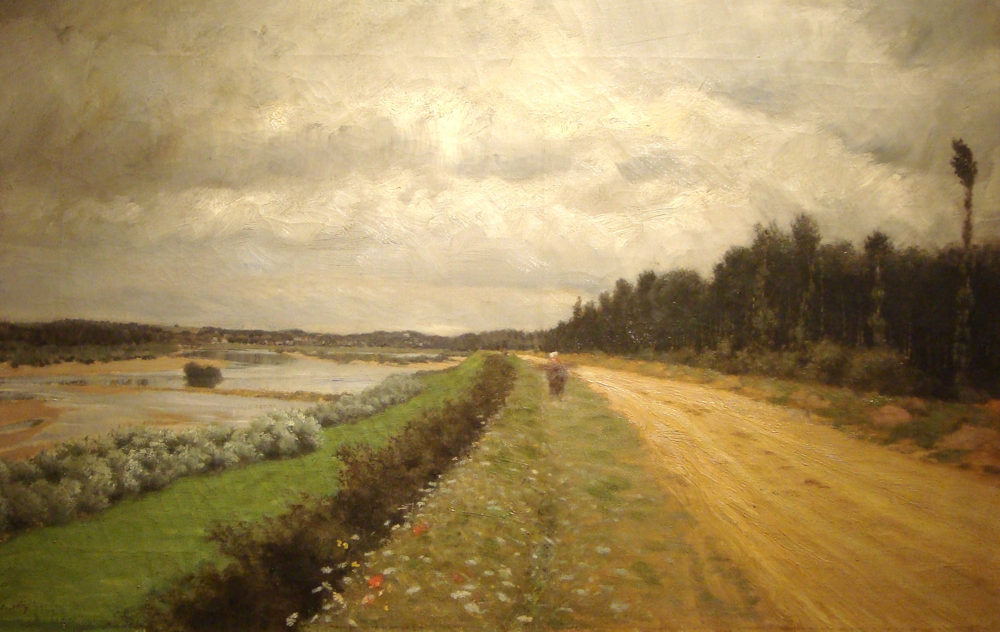
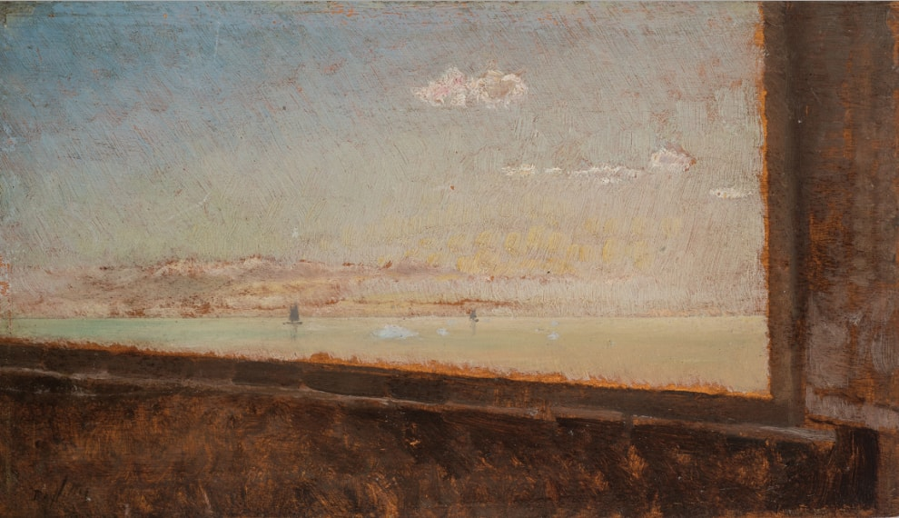
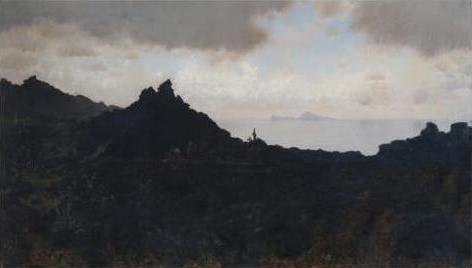
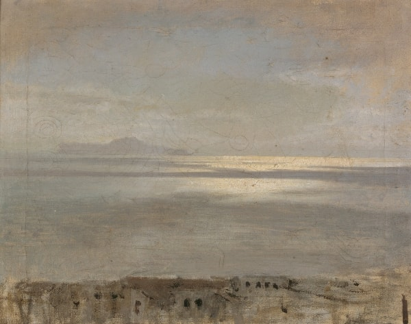
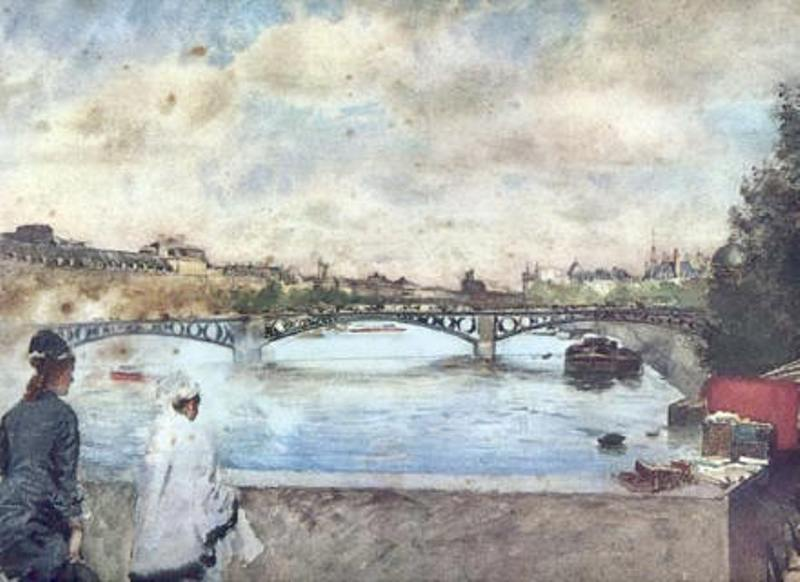
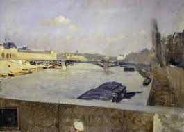
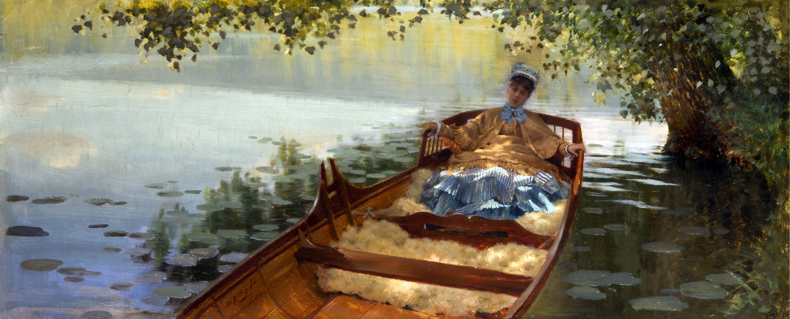
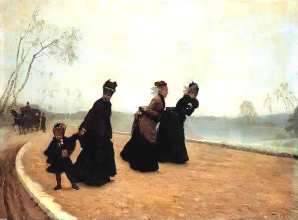

|
Paesaggio marino nei dintorni di Napoli non datato (1866) Olio su tavola 24,5 x 61 cm Collezione privata |
|  |
Lungo l’Ofanto (o Strada campestre) non datato (1870) Olio su tela 43 x 65 cm Dalla Pinacoteca Giuseppe De Nittis, Barletta, Italia Di più
|
|  |
Marina (di Barletta?) dalla finestra dello studio XIX secolo, non datato Olio su tavoletta 14 x 24 cm Collezione privata |
|  |
Dalle asperità vesuviane: il golfo di Napoli e l'isola di Capri non datato (1872) Olio su tela 40 x 77 cm Dalla Pinacoteca Giuseppe De Nittis, Barletta, Italia |
|  |
Golfo di Napoli: riflessi solari non datato (1872) Olio su tela 30 x 39 cm Dalla Pinacoteca Giuseppe De Nittis, Barletta, Italia |
|  |
La senna non datato (1866) Pastello su carta 50 x 68,7 cm Musée d′Orsay, Paris, France |
|  |
Ponte sulla Senna non datato (1876) Olio su tela 53 x 72 cm Dalla Pinacoteca Giuseppe De Nittis, Barletta, Italia |
|  |
Leontine in canotto 1874 Olio su tavola 24 x 54 cm Collezione privata |
|  |
Che freddo! non datato (1874) Olio su tela 54 x 73 cm Civiche Raccolte d'Arte Applicata, Milano, Italia |